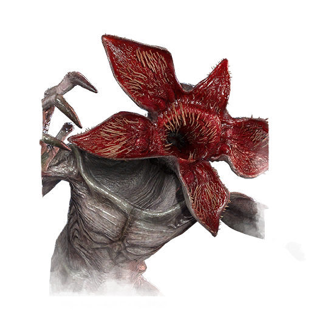

俄摩拉虫 Demogorgon
- 难度
- 3
- 移速
- 4.6
- 恐惧范围
- 32 米
- 能力
- 深渊之境
- 性别
- Not applicable (not human)
- 出身
- None (Creature, Extradimensional Origin)
- 演员
- None (Digital SFX)
背景故事
一张布满针状利齿的绽放裂口，配上巨大、弯曲、锋利如剃刀的爪子，再加上一双能扑倒猎物的强壮双腿——无论在哪个次元，地魔（The Demogorgon）都是令人胆寒的怪物。它是一头不受约束、充满野性狂怒的噩梦，穷追不舍地扑倒猎物，将其撕成碎片，吞食每一寸血肉与脏器，不给食腐者留下任何残余。这头生物内心没有丝毫怜悯与克制。俯身压在猎物之上时，它毫无迟疑与仁慈，只有永不满足的血腥欲望这一纯粹的本能，一击致命。作为一名完美的猎手，地魔是颠倒世界 lurking恐怖的最佳佐证，也正是「实体」（The Entity）眼中称手的取材对象。
专属技能
通用技能 任意杀手均可使用
苦涩低语
Bitter Murmur
淘汰弱者
Cull the Weak
捕鹿人
Deerstalker
煎熬
Distressing
咒术：命运愚者
Hex: Fortune's Fool
咒术：无人幸免于死
Hex: No One Escapes Death
咒术：狩猎快感
Hex: Thrill of the Hunt
黑暗中
In the Dark
隐秘
Insidious
铁掌
Iron Grasp
让他们等着
Keep Them Waiting
毫无保留
No Holds Barred
血狱钩：怪诞圣地
Scourge Hook: Monstrous Shrine
血狱钩：泣血之伤
Scourge Hook: Weeping Wounds
看他们逃窜
See How They Run
破碎希望
Shattered Hope
邋遢屠夫
Sloppy Butcher
暗影间谍
Spies from the Shadows
表现失常
Underperform
不依不饶
Unrelenting
耳语
Whispers
附加品
- 罕见 芭比的眼镜 Barb's Glasses
- 稀有 黑心 Black Heart
- 精贵 黄铜壳打火机 Brass Case Lighter
- 精贵 鹿肺 Deer Lung
- 精贵 伊莱文的汽水 Eleven's Soda
- 活动 麻风地衣 Leprose Lichen
- 传说 救生哨 Lifeguard Whistle
- 罕见 缪斯的内脏 Mews' Guts
- 稀有 鼠肝 Rat Liver
- 稀有 鼠尾 Rat Tail
- 活动 红苔 Red Moss
- 罕见 腐烂的绿牛肚 Rotten Green Tripe
- 稀有 烂南瓜 Rotten Pumpkin
- 罕见 粘衬里 Sticky Lining
- 精贵 荆棘藤 Thorny Vines
- 传说 未知卵 Unknown Egg
- 传说 颠倒树脂 Upside Down Resin
- 传说 朱红毒丝菌 Vermilion Webcap
- 精贵 紫蜡盔菌 Violet Waxcap
- 罕见 粘性蛛网 Viscous Webbing